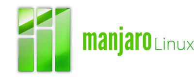
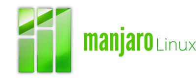

REGRESAR A LA PAGINA PRINCIPAL

Kali Linux es una distribución basada en Debian GNU/Linux diseñada principalmente para la auditoría y seguridad informática en general. Fue fundada y es mantenida por Offensive Security Ltd. Mati Aharoni and Devon Kearns, ambos pertenecientes al equipo de Offensive Security, desarrollaron la distribución a partir de la reescritura de BackTrack,que se podría denominar como la antecesora de Kali Linux.
 
